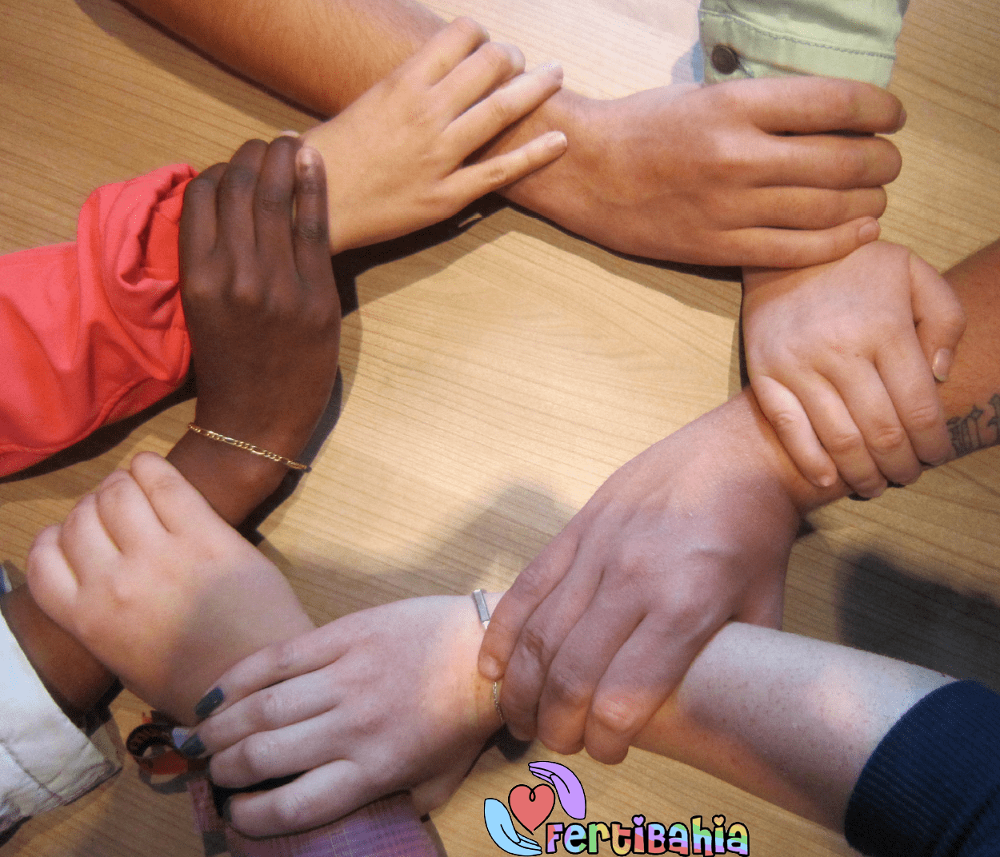

BIENVENIDOS A FERTIBAHIA!!
¡Bienvenidos a nuestro espacio de apoyo emocional para quienes están transitando por el desafiante camino de la fertilización asistida! Comprendemos que este viaje puede ser abrumador, lleno de esperanzas y desafíos. En este lugar seguro, ofrecemos un apoyo cálido y comprensivo a aquellos que buscan el sueño de la paternidad a través de técnicas de reproducción asistida.
Nuestro grupo de apoyo está formado por individuos y familias que han atravesado experiencias similares y están aquí para escuchar, compartir, y brindar apoyo mutuo. Juntos, exploraremos las emociones, preguntas, y alegrías que este proceso conlleva, brindando una red de solidaridad en cada paso del camino.
Únete a nosotros y encuentra la comprensión, la amistad y la información que necesitas para enfrentar este desafío de la mejor manera posible. Juntos, podemos crear un espacio donde la esperanza y el apoyo florezcan. ¡Bienvenidos a nuestro grupo de apoyo de fertilización asistida!

La ideadora de todo
Ella es la responsable de que este hermoso grupo haya cobrado vida
Romina Bonomi
* Profesora y Licenciada en Psicología
* Socia de S.A.P.R.H (Sociedad Argentina de Psicología en Reproducción Humana)
Sigueme
Celeste
La tribu me ayudó a darme cuenta que no me pasaba a mí sola y que habían más como yo que estaban pasando por lo mismo, que sentíamos lo mismo. Fue un poco de alivio y esperanza. Hace mucho deje de prestar atención a mis lunas pero cada menstruación la sufro con tristeza silenciosa de otra vez más no pudo ser.
Macarena, de Darregueira
Me uni por Caro, hicimos tto al mismo tiempo en Bahía. Cuando me uni, lo hice porque tenia medicación para donar; luego me pasó que necesite datos de algunos lugares para realizarme estudios y enseguida respondieron. Todas un amor, no tienen drama en ayudar, en sacar dudas. Es mágico poder hablar con gente que entiende lo que estás pasando, y como te sentís. Me hace e hizo muy bien pertenecer a esta bella Tribu.